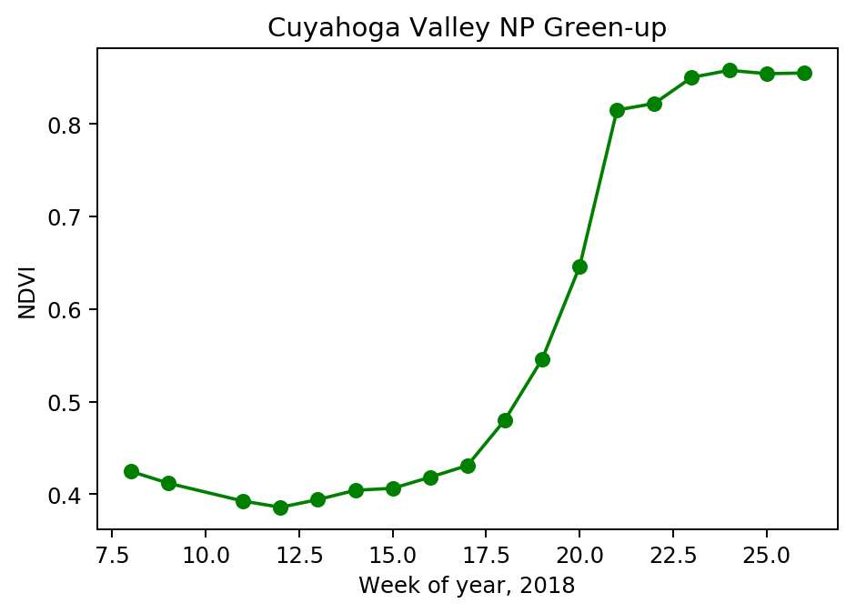

Time Series
Analysis Plan
In this example, we will show how the flexibility of the DataFrame concept for raster data allows a simple and intuitive way to extract a time series from Earth observation data. We will continue our example from the Zonal Map Algebra page.
We will summarize the change in NDVI over the spring and early summer of 2018 in the Cuyahoga Valley National Park in Ohio, USA.
Catalog Read
As in our other example, we will query for a single known MODIS granule directly. We limit the vector data to the single park of interest. The longer time period selected should show the change in plant vigor as leaves emerge over the spring and into early summer. The definitions of cat and park_vector are as in the Zonal Map Algebra page.
park_cat = cat \
.filter(
(cat.granule_id == 'h11v04') &
(cat.acquisition_date > lit('2018-02-19')) &
(cat.acquisition_date < lit('2018-07-01'))
) \
.crossJoin(park_vector.filter('OBJECTID == 380')) #only coyahuga
Vector and Raster Data Interaction
We follow the same steps as the Zonal Map Algebra analysis: reprojecting the park geometry, filtering for intersection, rasterizing the geometry, and masking the NDVI by the zone tiles. The code from that analysis is condensed here for reference.
raster_cols = ['B01', 'B02',] # red and near-infrared respectively
rf_park_tile = spark.read.raster(
park_cat.select(['acquisition_date', 'granule_id', 'geo_simp'] + raster_cols),
catalog_col_names=raster_cols) \
.withColumn('park_native', st_reproject('geo_simp', lit('EPSG:4326'), rf_crs('B01'))) \
.filter(st_intersects('park_native', rf_geometry('B01'))) \
.withColumn('dims', rf_dimensions('B01')) \
.withColumn('park_tile', rf_rasterize('park_native', rf_geometry('B01'), lit(1), 'dims.cols', 'dims.rows')) \
.withColumn('ndvi', rf_normalized_difference('B02', 'B01')) \
.withColumn('ndvi_masked', rf_mask('ndvi', 'park_tile'))
Create Time Series
We next aggregate across the cell values to arrive at an average NDVI for each week of the year. We use pyspark’s built in groupby and time functions with a RasterFrames aggregate function to do this. Note that the computation is creating a weighted average, which is weighted by the number of valid observations per week.
from pyspark.sql.functions import col, year, weekofyear, month
time_series = rf_park_tile \
.groupby(
year('acquisition_date').alias('year'),
weekofyear('acquisition_date').alias('week')) \
.agg(rf_agg_mean('ndvi_masked').alias('ndvi'))
Finally, we will take a look at the NDVI over time.
import matplotlib.pyplot as plt
time_series_pdf = time_series.toPandas()
time_series_pdf.sort_values('week', inplace=True)
plt.plot(time_series_pdf['week'], time_series_pdf['ndvi'], 'go-')
plt.xlabel('Week of year, 2018')
plt.ylabel('NDVI')
plt.title('Cuyahoga Valley NP Green-up')
Text(0.5,1,'Cuyahoga Valley NP Green-up')

We can see two fairly clear elbows in the curve at week 17 and week 21, indicating the start and end of the green up period. Estimation of such parameters is one technique phenology researchers use to monitor changes in climate and environment.